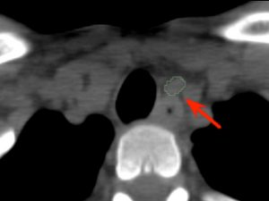
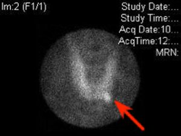
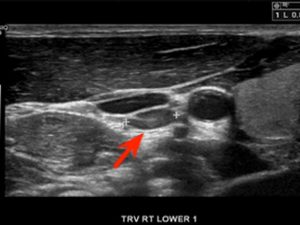
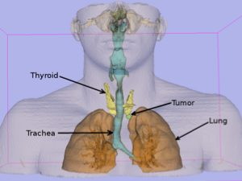
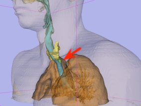
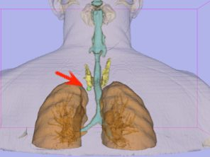
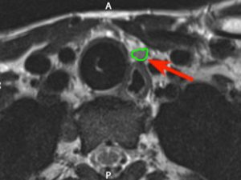
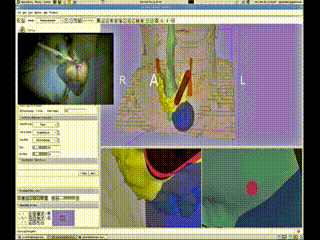
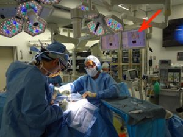

We have used AMIGO for the localization of parathyroid glands during parathyroidectomy and recurrent laryngeal nerves during thyroidectomy. Finding parathyroid glands can be challenging, even for the experienced endocrine surgeon, particularly when the glands are ectopic or are present in a re-operative setting. The current methods for localization of parathyroid adenomas rely on preoperative localization with ultrasound and sestamibi; however, these tests are not totally reliable and there are no useful intra-operative imaging methods for detecting parathyroid adenomas. The AMIGO-guided surgery allows the surgeon to focus in on the target parathyroid gland using the navigation system. By comparing the virtual space model of the tumor to the actual dissection, the surgeon can assess the location of the tumor and the extent to which the resection is complete.
Currently, there are no intra-operative imaging techniques that can aid in the localization of a parathyroid tumor. The surgeon must rely on expertise and judgment when the preoperative localization fails or is discordant. The AMIGO-guided parathyroid surgery provides real-time intraoperative feedback that assesses the location and degree of resection of parathyroid tumors that has not heretofore been possible.
We have attempted to map the recurrent laryngeal nerve — a nerve that controls the voice — during thyroid surgery. There are currently widely used nerve stimulators for detecting these nerves, but none is able to image them and define their course preoperatively. Using this innovation, we would be able to map this important nerve during thyroid surgery for large goiters or invasive cancers. This technology has the potential for becoming useful in the future, for re-operative parathyroid surgery, and in cases of invasive/anaplastic thyroid cancer in which the nerves can be mapped out in advance.
The case below illustrates the workflow for parathyroidectomy in AMIGO. A 28-year-old male presented with hypercalcemia and multiple symptoms associated with hyperparathyroidism. A diagnostic workup confirmed autonomous hypersecretion of the parathyroid hormone. Preoperative Tc-Sestamibi imaging revealed a focus of increased radiotracer uptake deep within the central neck in the tracheoesophageal groove. The small and deep-seated tumor would have required a larger incision and more extensive field of dissection without image-guidance. The patient underwent focused left parathyroidectomy in AMIGO.
Parathyroidectomy Workflow in AMIGO

Diagnostic
CT Imaging showing the parathyroid adenoma

Diagnostic
Tc-Sestamibi imaging showing an abnormal tracer uptake

Diagnostic
US imaging showing the adenoma

Surgical Planning
3D model generated from preoperative CT using 3D Slicer software – anterior view

3D Model
Using 3D Slicer software – left view

3D Model
Using 3D Slicer software – posterior view

The patient was placed on the operating table in the surgical position and intraoperative MRI was obtained. Using these intraoperative images, three dimensional models of the anatomy were created and provided to the navigation system

A Bovi pointer was instrumented with a position/orientation sensor to localize the different structures within the neck and guide the surgeon to the adenoma. The use of the navigation system allowed for the procedure to be completed promptly through a tiny incision with minimal dissection. The navigation system display showing the instrument (red cylinder) with respect to the neck anatomy (skin-peach, trachea-aqua, thyroid-yellow, tumor-green (deformed) and blue (undeformed))

AMIGO setup showing the Slicer navigation display on the monitor (indicated by red arrow)
Recent Publications
- Calligaris D, Feldman DR, Norton I, Olubiyi O, Changelian AN, Machaidze R, Vestal ML, Laws ER, Dunn IF, Santagata S, et al. MALDI Mass Spectrometry Imaging Analysis of Pituitary Adenomas for Near-real-time Tumor Delineation. Proc Natl Acad Sci U S A. 2015;112 (32) :9978-83. PMID: 26216958. PMC4538649
- Jayender J, Lee TC, Ruan DT. Real-Time Localization of Parathyroid Adenoma during Parathyroidectomy. N Engl J Med. 2015;373 (1) :96-8. PMID: 26132962. PMC4594796.
Content carried over from https://ncigt.org/parathyroidectomy/.